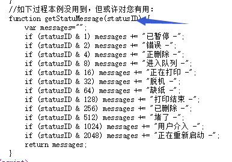

打印状态码
参考样例45http://www.c-lodop.com/demolist/PrintSample45.html获取打印状态，需要实际测试下，不同打印机状态码可能不同。
打印完了,为什么还是显示正在打印?
参考样例45http://www.c-lodop.com/demolist/PrintSample45.html
参考样例45的13的解释，和打印机有关，有的打印机成功状态码一直是不成功。
参考样例45的13的解释，有的打印机成功状态码一直是不成功。
状态码和打印机有关。
打印机不支持状态码的打印成功怎么办
参考样例45的13的解释，
此时页面程序需要针对这种打印机进行附加判断。事实上多数情况下
判断“JOB不在队列”就足可认定已经打印成功！
状态码附加不在队列判断，或直接判断不在队列认为成功。
获取的这个状态码是什么含义
样例右键查看源码，代入这个参数。

获取不到脱机状态
参考样例45http://www.c-lodop.com/demolist/PrintSample45.html
获取打印状态，需要实际测试下，不同打印机状态码可能不同。
如果实际测试该打印机获取不到脱机状态，就是获取不到。
获取不到缺纸状态
参考样例45http://www.c-lodop.com/demolist/PrintSample45.html
获取打印状态，需要实际测试下，不同打印机状态码可能不同。
如果实际测试该打印机获取不到缺纸状态，就是获取不到。
相关链接（cnblog里的旧博文)：
lodop和c-lodop通过打印状态和任务不在队列获取打印成功、 c-lodop回调函数简短问答及相关博文、